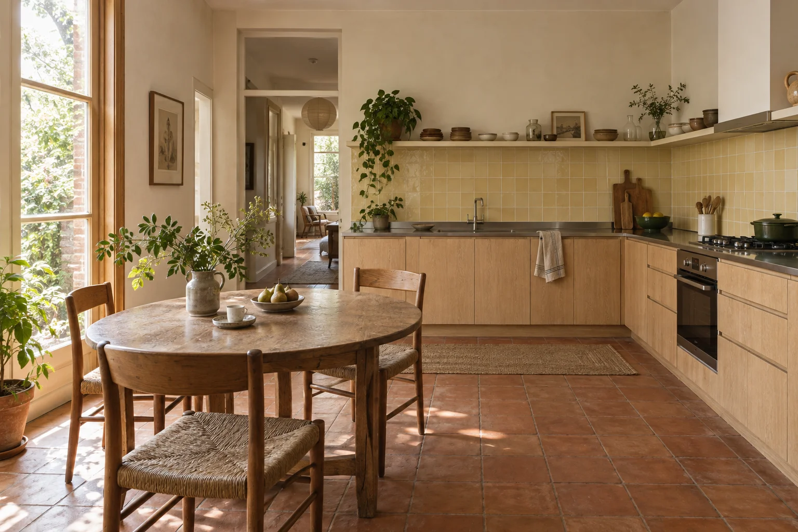

Let the table stay central.
The layout keeps the existing table as the meeting point of the room. The kitchen works beside it, rather than replacing it with a large island.
A kitchen that leaves room for breakfast, homework and the next meal. The round oak table was already doing the important work; the rest of the room needed to catch up.

Family life, around the same table.
For two adults and a child, preparing food and sharing the table happen at the same time. The brief asked for a clear preparation zone, a place for everyday ceramics and less daily clutter on the working surface.
The layout keeps the existing table as the meeting point of the room. The kitchen works beside it, rather than replacing it with a large island.
Pale oak lower cabinetry gives the room a quieter base. An open shelf keeps a small set of used-every-day ceramics close to the working wall.
A thin stainless-steel worktop sits against soft butter-coloured tile, oak and the existing terracotta. The palette lets each material have a clear job.
Pale cabinetry and the retained table
A thin working surface
A soft working-wall colour
The existing floor
These original colour and texture studies describe a direction. They are not physical samples, supplier products, technical specifications or performance claims.
Brief development, room layout options, material schedule and joinery intent drawings. No wall removal or structural alteration is included.
Confirm how the household uses the room, what stays and the design-versus-build budget assumptions.
Verify all dimensions, site and service conditions, fabrication details and installation requirements before any work.
Original concept room, 2026. The visual shows design intent; it is not a record of a completed renovation or verified construction drawings.